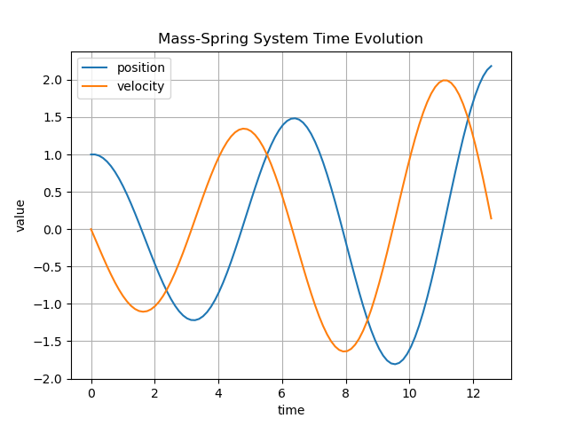
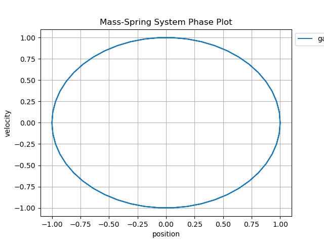
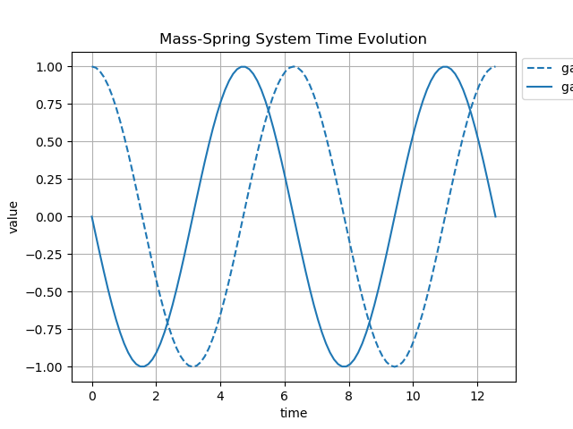
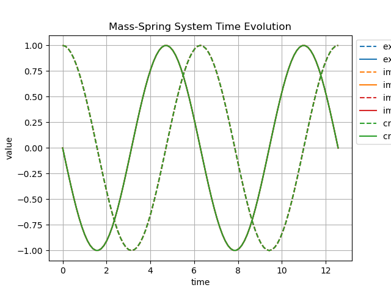
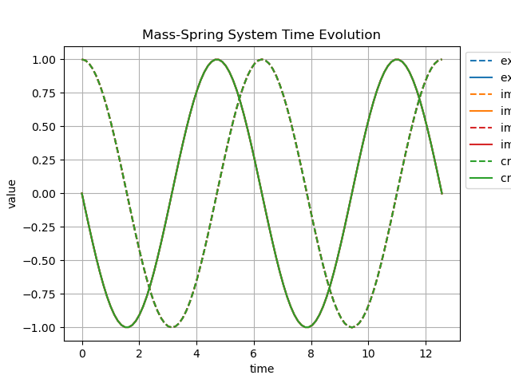
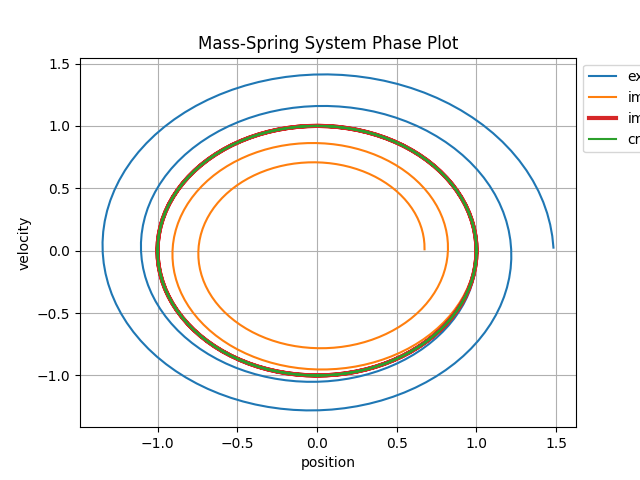
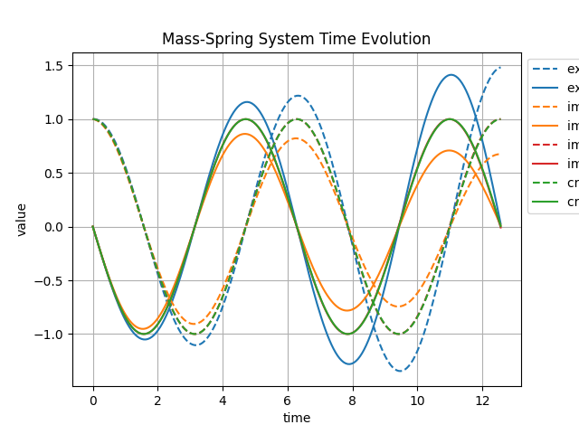

8. Mass Spring System#
This example demonstrates the application of the ASC-ODE package to simulate a mass-spring system. The mass-spring system is a classic example in physics and engineering, characterized by oscillatory motion due to the restoring force of the spring.
8.1. Explicit Euler#
Below is a phase plot for a mass-spring system solved using the Explicit Euler method.


Here we can see that the Explicit Euler method does not conserve energy, leading to a spiraling outwards trajectory in the phase plot.
8.2. Implicit Euler#
Below is a phase plot for a mass-spring system solved using the Implicit Euler method.


Here we observe that the Implicit Euler method also fails to conserve energy, resulting in a spiraling inwards trajectory in the phase plot.
8.3. Improved Euler#
Below is a phase plot for a mass-spring system solved using the Improved Euler method.
First the system phase plot and time evolution using the Improved Euler method with step size h=0.1:


Here we can see that the Improved Euler method provides a better approximation of the system’s dynamics, with a more circular trajectory in the phase plot, indicating improved energy conservation compared to the Explicit and Implicit Euler methods.
8.4. Crank-Nicolson#
Below is a phase plot for a mass-spring system solved using the Crank-Nicolson method.
First the system phase plot and time evolution using the Improved Euler method with step size h=0.1:


Here we can see that the Crank-Nicolson method provides a very good approximation of the system’s dynamics, with a nearly circular trajectory in the phase plot, indicating excellent energy conservation.
8.5. Runge-Kutta#
For the Runge-Kutta methods, we utilize different Butcher tableaus to define the stages of the methods.
8.5.1. Explicit Runge Kutta Method#
Below is a phase plot for a mass-spring system solved using both Explicit and Implicit Runge Kutta methods with the different helper functions to generate Butcher tableaus.
First the system phase plot and time evolution using the Explicit Runge Kutta method with step size h=0.1:
Here we can see that the Explicit Runge Kutta method provides a very good approximation of the system’s dynamics, with a nearly circular trajectory in the phase plot, indicating excellent energy conservation.
8.5.2. Implicit Runge Kutta Method#
Next the system phase plot and time evolution using the Implicit Runge Kutta method with step size h=0.1:
Here we can see that the Implicit Runge Kutta method also provides a very good approximation of the system’s dynamics, with a nearly circular trajectory in the phase plot, that indicates excellent energy conservation.
8.5.2.1. Implicit Runge Kutta Method with Gauss-Legendre Butcher Tableau#
Next the system phase plot and time evolution using the Implicit Runge Kutta method with Gauss-Legendre Butcher Tableau and step size h=0.1:
 
Here we can see that the Implicit Runge Kutta method with Gauss-Legendre Butcher Tableau also provides a good approximation of the system’s dynamics, with a nearly perfect circular trajectory in the phase plot, indicating superior energy conservation.
8.6. Comparison of different methods and step sizes#
8.6.1. Step Size T = 100#
For the step size T = 100, we compare the phase plots and time evolution of the mass-spring system using different numerical methods. In the phase plot and time evolution plots below, we observe the differences in energy conservation and trajectory shapes for the different methods. For the step size T = 100, we have the following results:
 

The phase plot shows that for example the explicit Euler method leads to a spiraling outwards trajectory, while the implicit Euler method results in a spiraling inwards trajectory. The Improved Euler and Crank-Nicolson show more circular trajectories, indicating better energy conservation.
8.6.2. Step Size T = 150#


8.6.3. Step Size T = 200#
 
8.6.4. Results Discussion#
For various step sizes, we observe that smaller step sizes generally lead to better energy conservation. Larger step sizes can introduce significant numerical errors, leading to distorted trajectories in the phase plots. The choice of numerical method also plays a crucial role in the accuracy of the simulation. Explicit methods may be less stable for larger step sizes, while implicit methods tend to be more stable but computationally intensive. Overall, the Improved Euler and Crank-Nicolson methods provide a good balance between accuracy and computational efficiency for simulating the mass-spring system.
8.7. Simulation of Mass-Spring System#
Here is a simulation of a simple mass-spring system where a mass is attached to a spring and oscillates back and forth.

Here we see a simulation of a mass-spring chain system where multiple masses are connected by springs.